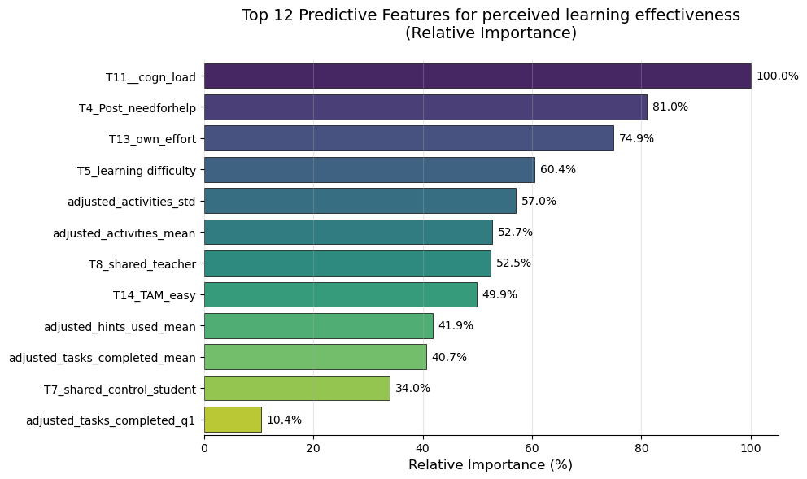

Predicting students’ perceived learning effectiveness and knowledge gain
Author
Affiliation
Pankaj Chejara
Tallinn University
Published
April 8, 2025
We will now investigate the predictive power of behavioral features along with self-reported measures to predict students perceived learning effectiveness and knowledge gain.
We will predict two key outcomes using behavioral features:Perceived Effectiveness, Knowledge Gain
To transform these outcomes into a binary variable for classification, we will perform steps given below. - Perform median split on each target variable: - Median split:
- High ≥ Median value
- Low < Median value
Code
results = {}cv = KFold(n_splits=5, shuffle=True, random_state=42)# Create a copy of the dataframe to avoid modifying the originaldf_with_binary_targets = clean_df.copy()for target in targets:#print(f"\n{'='*70}")#print(f"Building Random Forest classification model for target: {target}")# Create binary target using median split median_value = target_split_point[target] binary_target_name =f"{target}_binary" df_with_binary_targets[binary_target_name] = (clean_df[target] > median_value).astype(int)#print(f"Class distribution: {df_with_binary_targets[binary_target_name].value_counts().to_dict()}")# Prepare X and y X = df_with_binary_targets[indp] y = df_with_binary_targets[binary_target_name]# Create Random Forest classifier with default parameters rf_model = RandomForestClassifier(random_state=42)# Get cross-validated predictions y_pred = cross_val_predict(rf_model, X, y, cv=cv)# Calculate metrics accuracy = accuracy_score(y, y_pred) precision = precision_score(y, y_pred) recall = recall_score(y, y_pred) f1 = f1_score(y, y_pred)""" print("\nPerformance Metrics:") print(f"Accuracy: {accuracy:.4f}") print(f"Precision: {precision:.4f}") print(f"Recall: {recall:.4f}") print(f"F1 Score: {f1:.4f}") """# Fit the final model on all data to get feature importances rf_model.fit(X, y)# Store results results[target] = {'model': rf_model,'accuracy': accuracy,'precision': precision,'recall': recall,'f1': f1, }# Summary table of resultssummary_df = pd.DataFrame({'Target': [t for t in targets],'Accuracy': [results[t]['accuracy'] for t in targets],'Precision': [results[t]['precision'] for t in targets],'Recall': [results[t]['recall'] for t in targets],'F1 Score': [results[t]['f1'] for t in targets],})
The table given below provides performance measures for our machine learning models.
Target Variable
Accuracy
Precision
Recall
F1 Score
Knowledge Gain
0.351
0.375
0.474
0.419
T2_Post_effectiveness
0.558
0.500
0.382
0.433
Performance
Knowledge Gain Model
❌ Underperformed than the chance (Chance model performance .50)
Effectiveness Model
⚠️ Marginally better than chance (Accuracy = 0.558)
Prediction using self-reported features
The augmentation of behavioral features with self-reported measures produced following results:
Knowledge Gain Prediction
▶ Persistent sub-chance performance (Accuracy = 0.325) for predicting knowledge gain.
Perceived Effectiveness Prediction
▶ Significant improvement (Accuracy = 0.792) demonstrates strong utility of subjective measures for evaluating self-assessed experiences
Code
extended_features = indp.copy()additional_features = [col for col in df_sel.columns if col notin indp + targets ]extended_features.extend(additional_features)# Create a merged dataframe with all needed columnsmerged_df = clean_df.copy()for col in additional_features:if col notin merged_df.columns: merged_df[col] = df_sel[col]results = {}cv = KFold(n_splits=5, shuffle=True, random_state=42)for target in targets:#print(f"\n{'='*70}")#print(f"Building Random Forest classification model for target: {target}")#print(f"{'='*70}")# Create binary target using median split median_value = target_split_point[target] binary_target_name =f"{target}_binary" merged_df[binary_target_name] = (merged_df[target] > median_value).astype(int)##print(f"Created binary target '{binary_target_name}' with median split at {median_value}")#print(f"Class distribution: {merged_df[binary_target_name].value_counts().to_dict()}")# Prepare X and y X = merged_df[extended_features] y = merged_df[binary_target_name]# Create Random Forest classifier with default parameters rf_model = RandomForestClassifier(random_state=42)# Get cross-validated predictions and probabilities y_pred = cross_val_predict(rf_model, X, y, cv=cv) y_prob = cross_val_predict(rf_model, X, y, cv=cv, method='predict_proba')[:, 1]# Calculate metrics accuracy = accuracy_score(y, y_pred) precision = precision_score(y, y_pred) recall = recall_score(y, y_pred) f1 = f1_score(y, y_pred)""" print("\nPerformance Metrics:") print(f"Accuracy: {accuracy:.4f}") print(f"Precision: {precision:.4f}") print(f"Recall: {recall:.4f}") print(f"F1 Score: {f1:.4f}") """# Fit the final model on all data to get feature importances rf_model.fit(X, y)# Store results results[target] = {'model': rf_model,'accuracy': accuracy,'precision': precision,'recall': recall,'f1': f1, }# Summary table of resultssummary_df = pd.DataFrame({'Target': [t for t in targets],'Accuracy': [results[t]['accuracy'] for t in targets],'Precision': [results[t]['precision'] for t in targets],'Recall': [results[t]['recall'] for t in targets],'F1 Score': [results[t]['f1'] for t in targets],})#print("\nSummary of Model Performance:")#print(summary_df.to_string(index=False, float_format=lambda x: f"{x:.4f}"))
Model Target
Accuracy
Precision
Recall
F1 Score
Knowledge Gain
0.325
0.306
0.290
0.297
T2_Post_effectiveness
0.792
0.781
0.735
0.758
Figure 1 shows importance of features for perceived effectiveness prediction.
Code
resutl = results['T2_Post_effectiveness']# Get the fitted Random Forest modelrf_model = result['model']# Get and scale feature importancesimportances = rf_model.feature_importances_importance_percent = (importances / importances.max()) *100# Scale to percentage# Create and sort DataFramefeature_importance = pd.DataFrame({'Feature': extended_features,'Importance': importances,'Importance (%)': importance_percent}).sort_values('Importance (%)', ascending=False)# Plot settingsplt.figure(figsize=(10, 6))ax = sns.barplot(x='Importance (%)', y='Feature', data=feature_importance.head(top_n), palette='viridis', # Color gradient edgecolor='black', # Outline bars linewidth=0.5)# Add value labelsfor i, (_, row) inenumerate(feature_importance.head(top_n).iterrows()): ax.text(row['Importance (%)'] +1, # x-position i, # y-positionf"{row['Importance (%)']:.1f}%", # Formatted text va='center', fontsize=10)# Stylingplt.title(f'Top {top_n} Predictive Features for perceived learning effectiveness\n(Relative Importance)', fontsize=14, pad=20)plt.xlabel('Relative Importance (%)', fontsize=12)plt.ylabel('') # Remove 'Feature' y-label for cleaner looksns.despine(left=True) # Remove left spineplt.grid(axis='x', alpha=0.3) # Add subtle gridplt.tight_layout()plt.show()

Figure 1: Feature importance for perceived learning effectiveness prediction model
Caution with interpreting performance results
The goal was not here to build automated models for prediction purposes. Rather it was to investigate predictive nature of various features for a better understanding of relationships between behavioral & self-reported features and target variables.